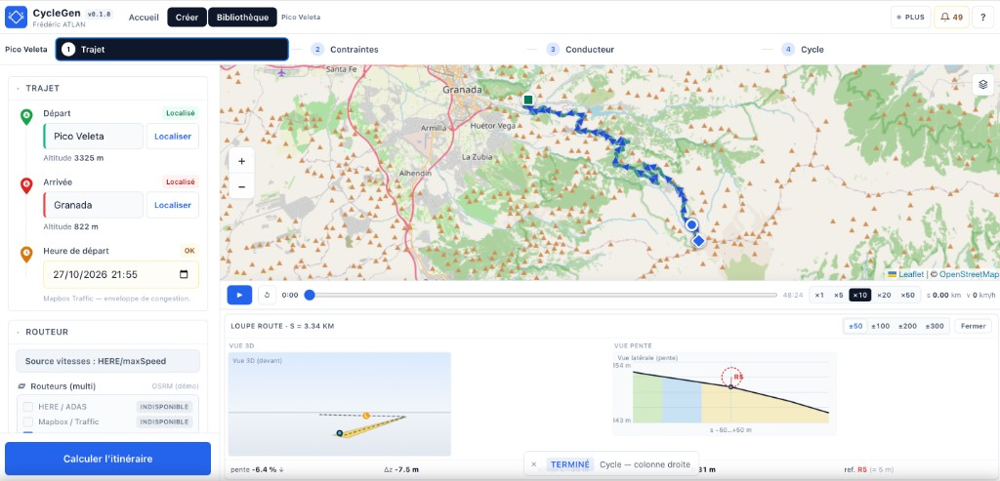
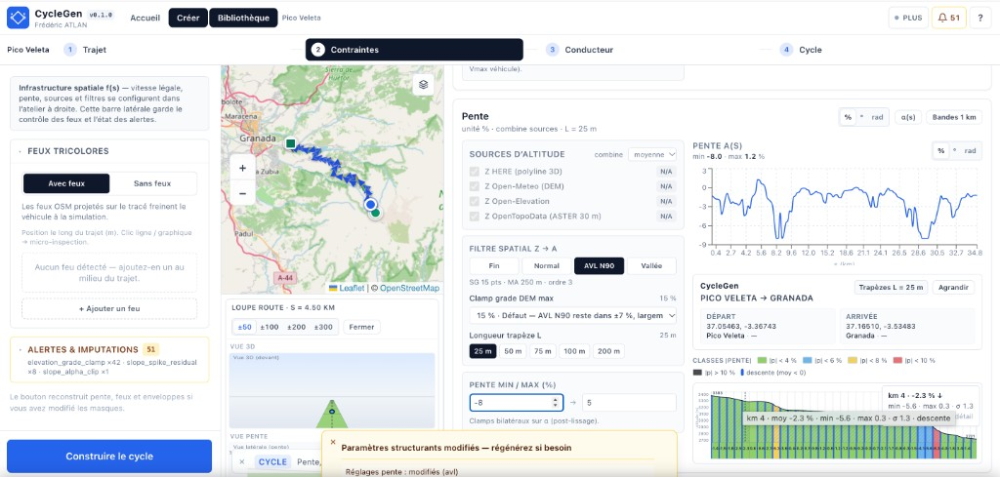
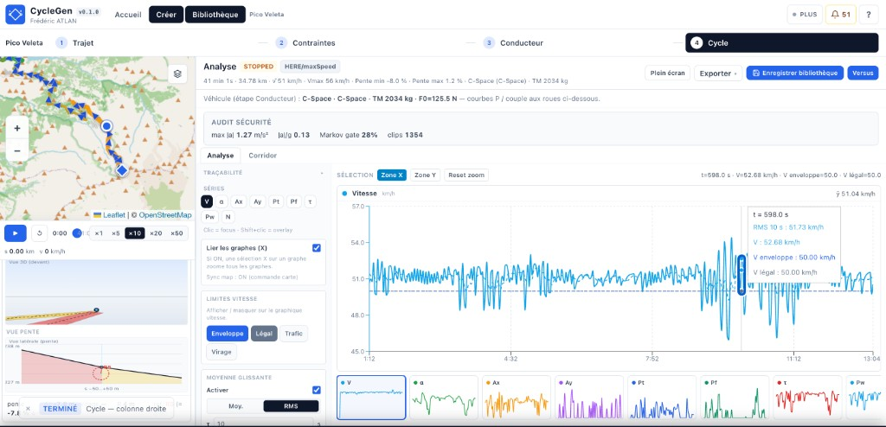

À quoi ça sert
En amont d’un projet véhicule (énergie, freinage, montagne), on veut des cycles liés à une géographie réelle — pas seulement un cycle plat réglementaire. CycleGen enchaîne : tracer un itinéraire, construire une enveloppe de vitesse le long de la distance, faire « conduire » un modèle de conducteur sous cette enveloppe, puis traduire l’accélération en forces, couple et puissance aux roues.
L’écran web est un atelier (carte, curseurs, graphiques). La physique tourne côté serveur Python — volontairement hors du navigateur.

Deux cadences
Reconstruire la géométrie (itinéraire, altitude, feux) est coûteux : réseau, modèles numériques. Changer le style de conduite ou le véhicule, une fois le corridor en mémoire, est bon marché — quelques dizaines de millisecondes.
Règle produit : reconstruire le corridor = action explicite ; retoucher le conducteur = re-simulation rapide, sans remettre la carte à zéro.
Pipeline (cher vs bon marché)
Atelier web
→ client HTTP
analyser l’itinéraire # cher
construire le corridor # cher
démarrer la simulation # bon marché si corridor déjà là
→ serveur Python (routes HTTP minces)
→ assemblage spatial → corridor
→ solveur de conducteur (+ modèle véhicule)
→ profil exportableConducteur
Un régulateur classique sur l’erreur de vitesse poursuit une consigne et oscille souvent sur une route accidentée. CycleGen utilise un modèle de conducteur continu (Intelligent Driver Model) : à chaque pas, une accélération qui équilibre « je veux aller à telle vitesse » et « je garde une distance de sécurité ». Eco / Normal / Sport ne changent que quelques boutons (accélération max, freinage confort, facteur de vitesse) — pas une autre physique.
Un petit bruit optionnel simule la nervosité en roulage libre ; il est coupé dès qu’on freine fort ou qu’un danger est trop près.
Équations et code — conducteur
Accélération IDM et distance désirée \(s^*\) (\(a_{\max}\) accélération souhaitée, \(b_{\mathrm{comf}}\) freinage confort, \(T\) temps de tête, \(s_0\) gap à l’arrêt) :
\[ a_{\mathrm{IDM}}=a_{\max}\left( 1-\left(\frac{v}{v_0}\right)^{\delta} -\left(\frac{s^{*}}{s}\right)^{2} \right) \quad(\delta=4) \] \[ s^{*}=s_0+v\,T+\frac{v\,\Delta v}{2\sqrt{a_{\max}\,b_{\mathrm{comf}}}} \] \[ v_0=\max\bigl(0{,}1,\; V_{\mathrm{envelope}}(s)\cdot \texttt{speed\_factor}\bigr) \]Coupure du bruit et clip, puis intégration d’Euler (\(\Delta t\approx 1\,\mathrm{s}\)) :
\[ d_{\mathrm{brake}}=\max\!\Bigl(\frac{v^{2}}{2\,b_{\mathrm{comf}}},\,25\Bigr)\quad[\mathrm{m}] \] \[ a=\operatorname{clip}\bigl(a_{\mathrm{IDM}}+a_{\mathrm{noise}},\; -1{,}5\,b_{\mathrm{comf}},\; a_{\max}\bigr) \] \[ v\leftarrow v+a\,\Delta t,\qquad s\leftarrow s+v_{\mathrm{old}}\,\Delta t \]# Extrait — a_IDM (kinematic_solver.py)
free = 1.0 - (v / v0) ** DELTA
dv = v - v_lead
s_star = params.s0 + max(
0.0,
v * params.T
+ (v * dv) / (2.0 * math.sqrt(max(params.a_max * params.b_comf, 1e-6))),
)
return params.a_max * (free - (s_star / gap) ** 2)Corridor
Avant de conduire, on prépare le long de la route : pente, limitations, estimation de trafic si dispo, vitesse de confort en virage. L’enveloppe retenue est le minimum de ces limites. L’altitude brute plonge parfois sous un pont : on corrige les structures carte, on lisse, puis on calcule la pente. Affichage en % à l’écran ; calcul en radians.
Équations — corridor et enveloppe
Objet indexé par la distance \(s\) :
\[ \bigl(S,\;\alpha(s),\;V_{\mathrm{legal}},\;V_{\mathrm{traffic}},\;V_{\mathrm{curve}},\;V_{\mathrm{envelope}},\;S_{\mathrm{feux}}\bigr) \]Pente après lissage (Savitzky–Golay, noté SG) :
\[ \alpha_i=\operatorname{atan}\!\left(\frac{z^{\mathrm{SG}}_i-z^{\mathrm{SG}}_{i-1}}{S_i-S_{i-1}}\right) \]Virage (\(a_y\) confort latéral, \(R\) rayon) et enveloppe :
\[ V_{\mathrm{curve}}(s)=\sqrt{a_y\,R(s)} \] \[ V_{\mathrm{envelope}}(s)=\min\bigl(V_{\mathrm{legal}}(s),\,V_{\mathrm{traffic}}(s),\,V_{\mathrm{curve}}(s)\bigr) \]
Forces aux roues
Le conducteur propose une accélération. Le modèle véhicule borne ce que traction et frein peuvent vraiment faire : résistance à l’avancement (coefficients F0, F1, F2), composante de pente, puis force appliquée limitée par puissance et frein max. On reconstruit l’accélération réelle, puis couple et puissance aux roues.
Le catalogue démo propose des ordres de grandeur de véhicules électriques (non officiels). Pour une étude critique, on substitue des données constructeur ou des mesures autorisées.
Équations et code — bilan de forces
\[ F_{\mathrm{need}}=m\,a_{\mathrm{cmd}}+F_{\mathrm{road}}+F_{\mathrm{grade}} \] \[ F_{\mathrm{road}}=F_0+F_1\,v_{\mathrm{km/h}}+F_2\,v_{\mathrm{km/h}}^{2},\qquad F_{\mathrm{grade}}=m\,g\,\sin\alpha \] \[ a=\frac{F_{\mathrm{applied}}-F_{\mathrm{road}}-F_{\mathrm{grade}}}{m} \] \[ T=F\,r_{\mathrm{dyn}},\qquad P=T\,\omega \]# Road-load (kinematic_solver.py)
def _road_load_n(v_mps: float, plant: VehiclePlant) -> float:
vk = max(0.0, v_mps) * 3.6 # m/s → km/h
return plant.f0_n + plant.f1_n_per_kph * vk + plant.f2_n_per_kph2 * vk * vkRoutes alpines
Pour stresser freinage et retenue, la démo embarque des packs déjà remplis (Pico Veleta, Grossglockner, Iseran, Stelvio) : géométrie, corridor, premier profil. À l’ouverture, les quatre écrans (Trajet → Contraintes → Conducteur → Cycle) sont peuplés. Relancer une génération live passe par le serveur de calcul.

Lecture de l’écran
Un graphe principal (souvent la vitesse), un bandeau de miniatures pour changer de grandeur, un curseur commun carte ↔ courbes. L’idée : regarder le phénomène (suivi d’enveloppe, pic de couple), pas réorganiser neuf panneaux.
Stack et limites
Interface statique (Next.js) sur GitHub Pages ; calcul Python (FastAPI) en conteneur, aujourd’hui sur Render — cold start possible après inactivité. CycleGen n’est pas une campagne terrain, ni une homologation, ni un modèle thermique détaillé de batterie ou de frein. La vitesse en virage est un confort latéral, pas la limite d’adhérence pneu.